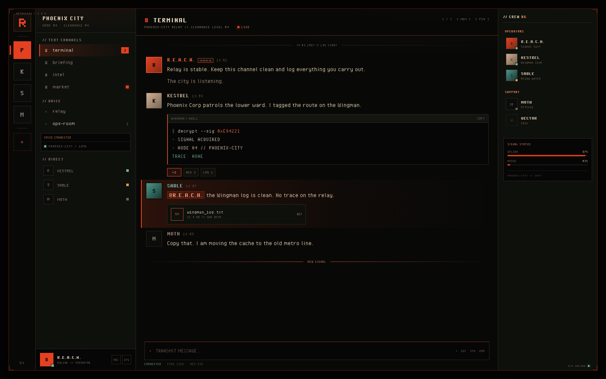

01
ONE FILE
Fonts, icons and textures are embedded in a single CSS file. One command installs it, and it works offline.
A terminal-grade theme built around the visual language of REPLACED: signal orange, dark glass, pixel typography and a persistent scanline. One self-contained CSS file with your own accent color, straight from the repository.
https://raw.githubusercontent.com/leriart/ReCord/main/ReCord.theme.css
Square panels, one-pixel rules, dithered edges and a warm black surface. The screenshot is a static interface study of the theme language.

Fonts, icons and textures are embedded in a single CSS file. One command installs it, and it works offline.
Pixel Operator, released under CC0, carries display, body and monospaced terminal text.
Scanlines, grain and corner brackets. Menus wipe in from the left, glitch on hover and sweep like a terminal.
Override --rl-* variables in QuickCSS to retune the signal, surfaces or scanline density.
The orange is sampled directly from the REPLACED pause menu and logo. Paper and teal are taken from the Wingman device and the game's shadow tones.
#79B59A online, #DDA052 idle, #FF4626 do not disturb,
#6F655A offline.
Tested with Vencord and Equicord on Discord desktop and Vesktop. One self-contained CSS file: paste the link or download it.
One command finds Vencord, Vesktop, Equicord, Equibop and BetterDiscord, copies the theme and switches it on.
Close it completely, also from the tray, and open it again.
Pick dark or light, an accent, a background and the animation level here, or inside Discord with the plugin.
// Linux, macOS, Git Bash, WSL curl -fsSL https://raw.githubusercontent.com/leriart/ReCord/main/install.sh | bash // Windows PowerShell irm https://raw.githubusercontent.com/leriart/ReCord/main/install.ps1 | iex // with in-app settings and sounds (Vesktop) curl -fsSL .../install.sh | bash -s -- --plugin // remove everything curl -fsSL .../install.sh | bash -s -- --uninstall
// Vencord > Themes > Online Themes https://raw.githubusercontent.com/leriart/ReCord/main/ReCord.theme.css
Download a file with these settings baked in, or paste the block into QuickCSS to adjust an online install.
:root { --rl-accent: #3ddc97; } to QuickCSS.
Every layer is a separate file. Change one module, keep the rest of the system intact.
ReCord/ ├── ReCord.theme.css built theme, one file ├── src/ │ ├── 00-tokens.css palette + surface │ ├── 01-fonts.css pixel operator faces │ ├── 02-tokens-discord.css │ ├── 03-base.css │ ├── 04-shell.css │ ├── 05-navigation.css │ ├── 06-chat.css │ ├── 07-members.css │ ├── 08-controls.css │ ├── 09-overlays.css │ ├── 10-settings.css │ ├── 11-effects.css │ ├── 12-priority.css │ ├── 13-motion.css │ ├── 14-icons.css │ ├── 15-boot.css │ └── 16-replaced.css ├── assets/ │ ├── brand/ mark, corners, grain │ ├── icons/ 16x16 pixel icons │ └── fonts/ pixel operator (CC0) └── docs/ preview + landing page
Customize: override any token in QuickCSS. The accent, scanline opacity, grain, vignette and font stack are all plain custom properties.
:root { --rl-signal: #ff5a2e; --rl-panel: #10120e; --rl-scanline-opacity: 0.25; --rl-grain-opacity: 0.18; --rl-vignette-opacity: 0.55; --rl-menu-duration: 190ms; }